1. LẨU CÁ ĐUỐI
- Lẩu cá đuối là một trong những món ăn đặc sản của Bà Rịa Vũng Tàu, với hương vị đậm đà và thơm ngon.
Được làm từ cá đuối tươi sống và nước lẩu được chế biến từ nhiều loại gia vị đặc trưng, món ăn này đã
trở thành một điểm đến ẩm thực hấp dẫn cho du khách khi ghé thăm Bà Rịa Vũng Tàu.
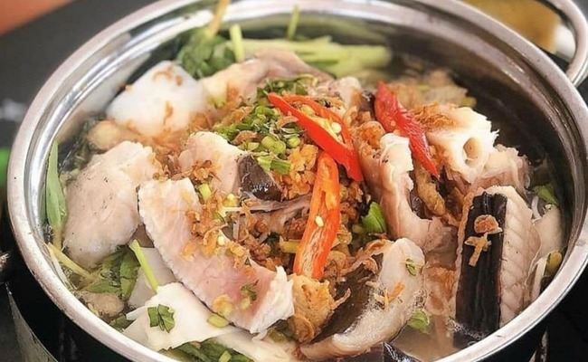
- Khi ăn lẩu cá đuối tại Bà Rịa Vũng Tàu, các miếng cá đuối tươi sẽ được cho vào nồi lẩu đã sôi, để
trong vài phút cho cá chín và thấm đầy hương vị của nước lẩu. Sau đó, ăn kèm với các loại rau sống, bún,
miến, bánh phở, củ năng, khoai môn,.. và nước chấm tự chọn. Hương vị đặc trưng của lẩu cá đuối tại Bà
Rịa Vũng Tàu sẽ khiến bạn thích thú và nhớ mãi.
Địa chỉ:
- Lẩu cá đuối Hoàng Minh: 44, Trương Công Định, P. 3, Vũng Tàu
- Lẩu cá đuối Út Mười: 16A, Trương Công Định, P.1, Vũng Tàu
- Lẩu cá đuối Trận: 42, Nguyễn Trường Tộ, P.3, Vũng Tàu
- Lẩu cá đuối Ngon 15: 15, Nguyễn Trường Tộ, P.3, Vũng Tàu
2. TIẾT CANH TÔM HÙM LONG HẢI
- Nếu bạn là tín đồ của hải sản tươi sống thì không thể bỏ qua món tiết canh tôm hùm khi đến Bà Rịa-
Vũng Tàu. Món ăn này được chế biến từ tôm hùm tươi sống, được thái thành từng miếng nhỏ và ăn kèm với
các gia vị đặc trưng. Với hương vị đậm đà và thơm ngon, tiết canh tôm hùm đã trở thành món ăn yêu thích
của nhiều người trong và ngoài địa phương.
- Để chế biến tiết canh tôm hùm, tôm hùm tươi sống sẽ được làm sạch, bóc vỏ, bỏ đầu và xén thành từng
miếng nhỏ. Sau đó, tôm hùm sẽ được trộn đều với dầu hào, tỏi, ớt, hành tím và nước chanh tạo thành hỗn
hợp gia vị đặc trưng. Trước khi thưởng thức, tiết canh tôm hùm thường được ướp trong tủ lạnh để đảm bảo
an toàn vệ sinh và tạo ra hương vị đặc trưng.
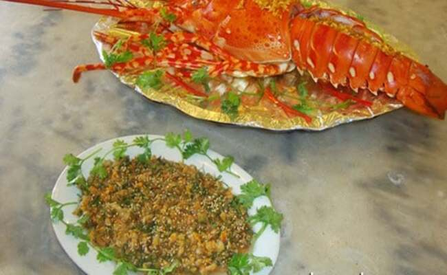
- Món này sẽ ăn kèm với rau sống, bánh đa, bánh tráng và nước mắm pha chế tự chọn. Hương vị của tôm hùm
tươi sống và gia vị đặc trưng sẽ khiến cho món ăn trở nên hấp dẫn và đặc biệt.
Địa chỉ:
- Long Hải, Bà Rịa- Vũng Tàu
3. GỎI CÁ MAI
- Gỏi cá mai là món ăn nổi tiếng có lịch sử lâu đời ở vùng biển Vũng Tàu.
- Để chế biến gỏi cá mai, cá mai tươi sẽ được làm sạch, tách thịt, sau đó trộn với các loại rau thơm đặc
trưng. Cuối cùng, tất cả các nguyên liệu sẽ được trộn chung với nước mắm chua ngọt, hành tím, tỏi phi và
mè rang trước khi trình bày lên đĩa.
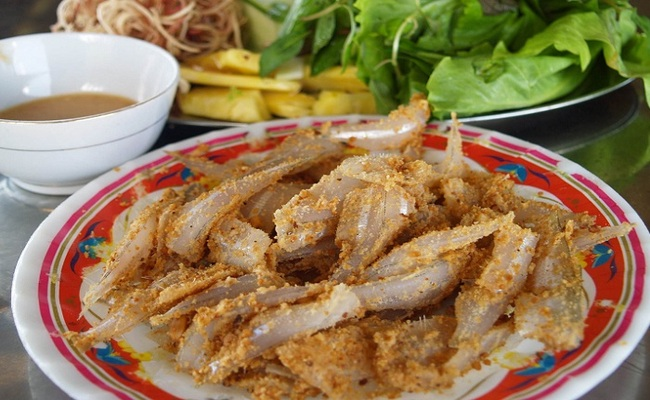
- Khi thưởng thức gỏi cá mai, bạn sẽ cảm nhận được hương vị chua ngọt đặc trưng của nước mắm pha
chế,
pha lẫn với hương vị thơm ngon của cá mai tươi và các loại rau củ tươi. Đây là một món ăn tuyệt vời để
ăn kèm với bánh đa, hoặc bánh tráng.
Địa chỉ:
-34/5 Hoàng Hoa Thám, TP Vũng Tàu
- A7.10/9 Đường số 12, KĐT Chí Linh, P. Nguyễn An Ninh, TP Vũng Tàu
- 195 Võ Thị Sáu, Thắng Tam, tp. Vũng Tàu
- Lô 8-9 Nguyễn Thiện Thuật, P. Thắng Nhất, TP. Vũng Tàu
4. BÁNH HỎI AN NHẤT
- Bánh hỏi An Nhất là món ăn nổi tiếng ở xã An Nhất, huyện Long Điền. Bánh hỏi nơi đây được làm từ loại
gạo thơm địa phương và bí quyết pha chế bột truyền thống, tạo nên những miếng bánh hỏi trắng tinh, thơm
mùi gạo, càng thưởng thức du khách sẽ càng cảm nhận được vị ngọt, dẻo, dai, kết hợp với hương vị đậm đà
của thịt, tôm, mực. Ngoài ra nước chấm chua ngọt của quán tạo ra hương vị đặc trưng, khiến cho món ăn
này trở nên ngon miệng hơn.
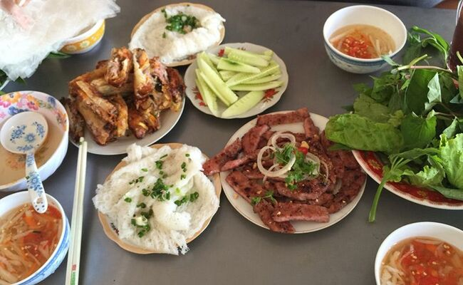
Địa chỉ:
- Đường quốc lộ 55, An Nhứt, Long Điền.
5. ỐC VÚ NÀNG
- Ốc Vú Nàng là một trong những món ăn đặc trưng của Bà Rịa - Vũng Tàu và được nhiều người yêu thích.
Loại ốc biển này có vỏ hình chóp lệch, trên đỉnh có một cái núm nhỏ, vỏ ngoài màu đen xám, mặt trong lấp
lánh xà cừ. Ốc Vú Nàng có thể được chế biến thành nhiều món ăn khác nhau như ốc luộc, ốc xào sả ớt, ốc
nướng, ốc rang bơ ….
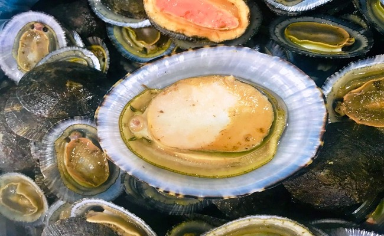
- Với hương vị độc đáo, đậm đà, ốc vú nàng là một món ăn đặc sắc không thể bỏ qua khi đến với thành phố
biển này.
Địa chỉ:
- Côn Đảo, Bà Rịa - Vũng Tàu
6. BÁNH XÈO LONG HẢI
- Bánh xèo Long Hải khác với các loại bánh xèo khác ở chỗ bánh được làm từ bột gạo và nước dừa tươi, cho
mùi vị thơm ngon đặc trưng của dừa.
- Bánh xèo Long Hải có lớp vỏ bánh giòn tan, ruột bánh mềm, dai và có độ dày vừa phải. Nhân bánh bao gồm
tôm, thịt lợn, nấm hương, đậu xanh, hành tây, rau thơm... Tất cả được chiên giòn trên bếp than hoa để
tạo ra hương vị thơm ngon, đậm đà.
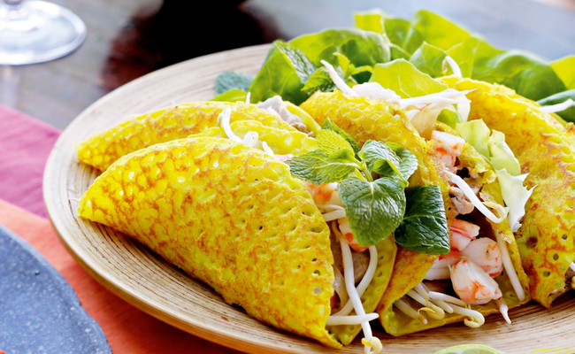
Địa chỉ:
- Đường số 6, Long Hải, Huyện Long Điền, Tỉnh Bà Rịa - Vũng Tàu
- 124A Lý Tự Trọng, thành phố Vũng Tàu, Vũng Tàu
- 6A Nam Kì Khởi Nghĩa, thành phố Vũng Tàu, Vũng Tàu
- Đường số 6, Long Hải, Huyện Long Điền, Vũng Tàu
7. MỨT HẠT BÀNG CÔN ĐẢO
- Mứt hạt bàng Côn Đảo là một món ăn truyền thống đặc sắc của đảo Côn Đảo, thuộc tỉnh Bà Rịa - Vũng Tàu.
Hạt bàng có vị béo, giòn đặc trưng, được thu hái từ cây bàng, một loại cây mọc hoang dại trên các đảo
ven biển.
- Để làm mứt hạt bàng, trước hết, hạt bàng được sơ chế để tách hết bụi và cát. Sau đó, hạt bàng được đem
đun với đường và một số gia vị truyền thống đến khi hạt bàng và nước đường hòa quyện với nhau, tạo ra
một mùi vị thơm ngon đặc trưng.
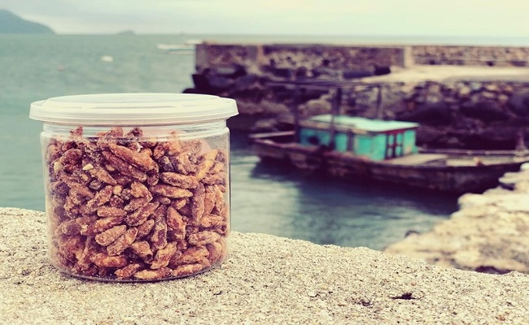
- Mứt hạt bàng Côn Đảo là món quà đặc biệt của Côn Đảo, được các du khách thập phương yêu thích và lựa
chọn làm quà tặng cho bạn bè và người thân.
- Nếu bạn đang tìm kiếm món quà đặc sản độc đáo của Côn Đảo, hãy đến với cửa hàng đặc sản Côn Đảo tại
địa chỉ số 11 Trần Hưng Đạo, phường 1, TP. Vũng Tàu để mua được những gói mứt hạt bàng chất lượng và
ngon miệng nhất.
8. BÁNH KHỌT
- Bánh khọt được xem là một món ăn được nhiều người yêu thích bởi sự giòn tan quyện cùng nước chấm đậm
đà đã tạo nên một món ăn hấp dẫn
- Khi ăn, bạn sẽ cảm nhận được sự giòn tan của bánh, vị ngọt của tôm, thịt heo hòa quyện với hương thơm
của rau thơm và gia vị tạo nên hương vị đặc biệt khó quên.
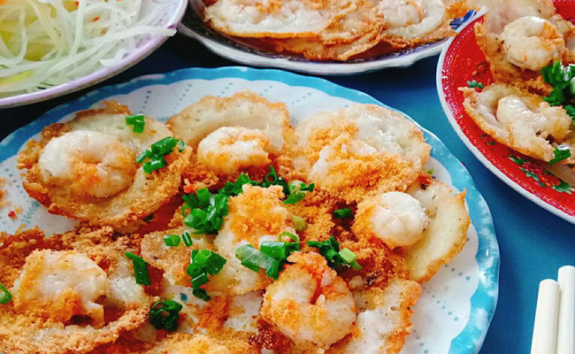
- Để thưởng thức bánh khọt Vũng Tàu ngon nhất, bạn có thể đến với các quán ở khu vực Bãi Sau, phường 2,
TP. Vũng Tàu. Những quán bán bánh khọt nơi đây thường đông khách và được đánh giá là nơi bán bánh khọt
ngon nhất.
Địa chỉ:
- Bánh khọt Gốc Vú Sữa: 14, Nguyễn Trường Tộ, P. 2, Vũng Tàu
- Bánh khọt Cô Ba Vũng Tàu: 1, Hoàng Hoa Thám, P. 3, Vũng Tàu
- Bánh khọt Miền Đông: 59, Bà Triệu, P. 4, Vũng Tàu
- Bánh khọt Cây Sung: 19, Hoàng Hoa Thám, P. 3, Vũng Tàu
9. CHÁO HÀU LONG SƠN
- Cháo được nấu từ loại gạo thơm ngon hoà quyện cùng với vị béo ngậy, ngọt thanh tự nhiên của những chú
hàu tươi, thêm một chút hành ngò xắt nhuyễn và một ít tiêu, đem tới cho bạn một món ăn không thể nào
quên được khi du lịch tới Vũng Tàu.
- Cháo hàu Long Sơn được coi là món ăn bổ dưỡng, giàu dinh dưỡng và rất tốt cho sức khỏe.
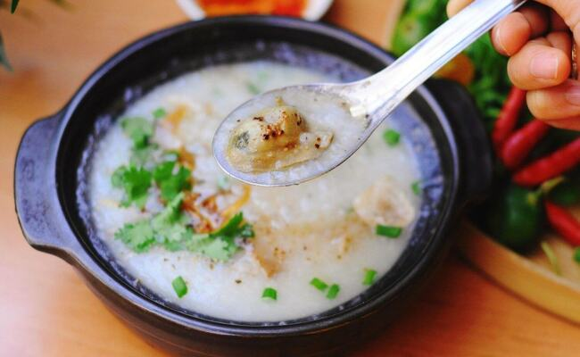
Địa chỉ:
- Thôn 2, Bến Đá, Đảo Long Sơn, Huyện Long Thành, Vũng Tàu
- 1637 Đường 30 tháng 4 , Tp. Vũng Tàu, Vũng Tàu
- 9 Thùy Vân, Phường 2, Thành phố Vũng Tầu, Bà Rịa – Vũng Tàu 78207
- Long Sơn, Thành phố Vũng Tầu, Bà Rịa – Vũng Tàu, Việt Nam
10. MÌ “THẢY”
- Nghe cái tên đã thấy rất lạ phải không các bạn, du khách không chỉ được vừa được thưởng thức tô mì với
nước lèo thơm ngon mà còn được xem tiết mục “thảy ” (quăng, ném) mì điệu nghệ của người chủ quán.
- Một trong những địa chỉ bán món mì này nổi tiếng nhất ở Vũng Tàu là quán mì thảy Nghiệp Ký. Không
giống với những kiểu mì ở Việt Nam, món mì này được làm theo kiểu của người Hoa. Sợi mì là do quán tự
làm bằng trứng gà nguyên chất nên giữ được độ dai, béo thơm và rất vừa miệng. Bên cạnh đó, phần nước
dùng được ninh từ xương hầm và sườn non trong veo, không thấy váng mỡ và vẫn giữ được độ trong vắt, đậm
đà.
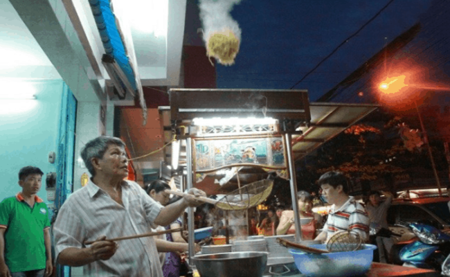
Địa chỉ:
- 127 Ba Cu, phường 4, TP. Vũng Tàu.
13. BÁNH CANH LONG HƯƠNG
- Bánh canh Long Hương được đặc trưng bởi sợi bánh to và dẻo, nước dùng đậm đà và thịt heo, tôm, mực
được cắt nhỏ tạo nên sự thơm ngon đặc trưng.
- 11 Cách Mạng Tháng Tám, Long Hương, Bà Rịa, Bà Rịa - Vũng Tàu
11. YAOURT – TRỨNG GÀ LÒNG ĐÀO
- Lên ngọn hải đăng ăn hũ sữa chua thơm ngon, trứng lòng đào béo ngậy và ngắm biển xanh ngắt là điều
không bỏ qua khi đến thành phố biển Vũng Tàu.
- Sữa chua làm trong hũ thủy tinh nhỏ, có hai loại cứng và mềm tùy sở thích mỗi người. Vị sữa chua ngậy
vừa đủ với giá 8.000 đồng/hũ.
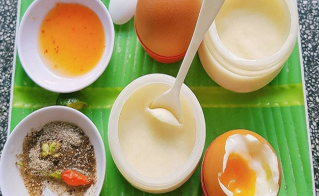
- Trứng gà cũng được phục vụ cả chín lẫn lòng đào. Ăn chung có hai loại đồ chấm, một là muối tiêu tắc
quen thuộc. Hai là loại nước có độ sánh, vị chua chua, ngọt ngọt và thơm đậm mùi tắc.
Địa chỉ:
- Đường lên ngon hải đăng – 36 Hải Đăng, phường 2, Tp Vũng Tàu
12. BÔNG LAN TRỨNG MUỐI
- Bánh bông lan trứng muối là một món ăn vặt đặc trưng của Vũng Tàu, nổi tiếng với hương vị thơm ngon,
béo bùi của trứng muối và độ mềm mịn của bánh bông lan.
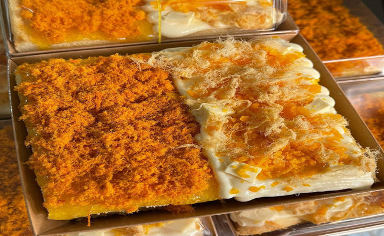
- Nếu bạn đang có dịp ghé thăm Vũng Tàu, hãy thử món ăn này để trải nghiệm hương vị đặc trưng này nhé.
Địa chỉ:
- Chi nhánh 1: 127 Lê Lai, Phương 3, Thành phố Vũng Tàu
- Chi nhánh 2: 83 Trương Công Định, Phường 3, Thành phố Vũng Tàu
- 17B Nguyễn Trường Tộ, Phường 2, Thành phố Vũng Tầu, Bà Rịa - Vũng Tàu
- 2 Đồ Chiểu, Phường 1, Thành phố Vũng Tầu, Bà Rịa - Vũng Tàu
13. BÁNH CANH LONG HƯƠNG
- Nằm ngay trước cổng chào thành phố Bà Rịa - Vũng Tàu, quán bánh canh Long Hương là địa điểm mà du
khách luôn ghé ăn khi đến thăm thành phố này.
- Bánh canh giò heo là món ăn quen thuộc của người dân miền Nam. Riêng với người dân thành phố Bà Rịa -
Vũng Tàu, món ăn với sợi bánh dai mềm, nước dùng thanh ngọt, thơm ngon.... còn là niềm tự hào về ẩm thực
.
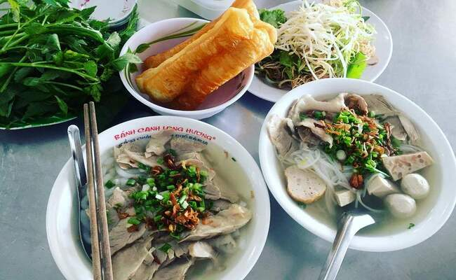
- Tuy là món ăn nổi tiếng, thu hút du khách trong và ngoài nước nhưng bánh canh Long Hương lại có thành
phần và cách chế biến khá đơn giản với sợi bánh, thịt heo và nước dùng... Điều khác biệt mà thực khách
có thể nhận thấy đầu tiên chính là sợi bánh. Không làm bằng bột gạo như món bánh canh thông thường của
người miền Nam, sợi bánh canh ở đây được chế biến hoàn toàn bằng bột lọc nên thường có màu trắng đục,
mềm nhưng dai và không bị bở hoặc gãy nát.
Địa chỉ:
- 11 Cách Mạng Tháng Tám, Long Hương, Bà Rịa, Bà Rịa - Vũng Tàu
14. BÁNH MÌ CHẢO
- Bánh mì chảo Vũng Tàu là món ăn sáng nổi tiếng của người dân nơi đây. Một món ăn không thể thiếu cho
các bạn học sinh, sinh viên hoặc thậm chí là người đi làm, khi ăn bánh mì thường được ăn kèm với nhiều
món khác để tăng thêm độ hấp dẫn và đậm vị cho món ăn như pate, xúc xích, chả,… và nhiều loại rau sống
khác.
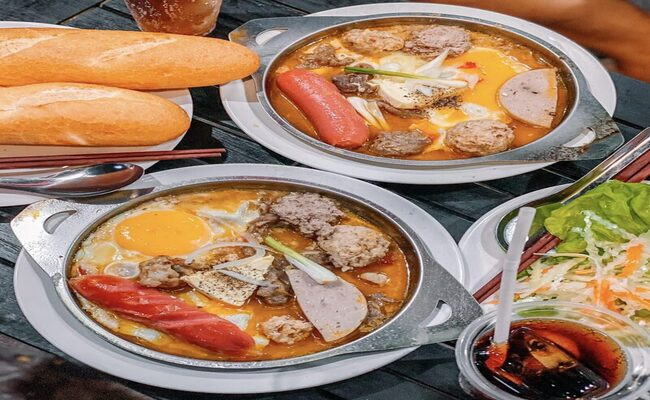
Địa chỉ:
- Quán bánh mì chảo Hùng Lâm: địa chỉ 63A Hạ Long, phường 2, thành phố Vũng Tàu.
- Quán bánh mì chảo Bảo Nam: địa chỉ 02 Nguyễn Công Trứ, phường 1, thành phố Vũng Tàu.
- Quán bánh mì chảo Phượng: địa chỉ 12 Lê Hồng Phong, phường 7, thành phố Vũng Tàu.
- Quán bánh mì chảo Anh Hòa: địa chỉ 166B Nam Kỳ Khởi Nghĩa, phường 3, thành phố Vũng Tàu.
- Quán bánh mì chảo Thanh Tâm: địa chỉ 50 Trương Công Định, phường 1, thành phố Vũng Tàu.
15. ỐC
- Vũng Tàu – một địa danh vô cùng nổi tiếng với những món ăn hải sản tươi, sống cực kỳ đa dạng và chất
lượng. Một trong những món đặc sản phải kể đến đó chính là ốc.
- Các quán ốc ở Vũng Tàu đa dạng về loại ốc như ốc len, ốc mũ, ốc đĩa, ốc gai, ốc móng tay, ốc bươu, ốc
nhồi... và được chế biến theo nhiều phong cách khác nhau như: rang muối, nướng mỡ hành, hấp bia, xào sả
ớt, lẩu ốc, chấm muối tiêu chanh...
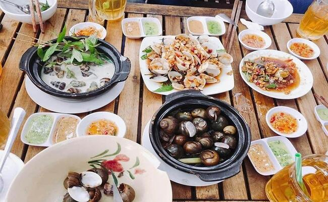
Địa chỉ:
- Ốc Tự Nhiên: 34, Trần Phú, P.1 (chi nhánh 1) || 23, Phạm Ngọc Thạch, P.Phước Hưng (chi nhánh 2) || 32,
Lê Quý Đôn, P. 1 (chi nhánh 3), Vũng Tàu
- Ốc Gia Truyền Vũng Tàu: địa chỉ 35 Hạ Long, phường 2, thành phố Vũng Tàu.
- Ốc Hải Sản Ngọc Trân: địa chỉ 137 Hùng Vương, phường Thắng Tam, thành phố Vũng Tàu.
- Ốc Hiền: 121, Lý Tự Trọng, Vũng Tàu
- Ốc Bình: 221/18 Trương Công Định, Vũng Tàu
16. KEM BƠ SẦU RIÊNG
- Một cốc kem bơ sầu riêng Vũng Tàu rất chất lượng với múi sầu riêng to ụ vàng ươm, dùng kèm bơ xay mịn
và kem mát lạnh lại càng hấp dẫn hơn. Ngoài kem bơ sầu riêng,bạn còn có thể thưởng thức cả kem bơ dừa,
kem bơ vani, kem bơ xoài cũng rất ngon.
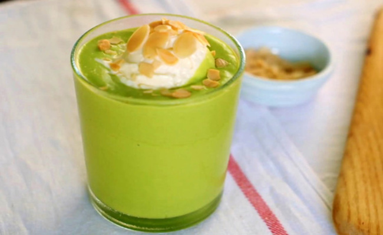
Địa chỉ:
- Quán Kem Sầu Riêng Hào - Địa chỉ: 122/2 Huyền Trân Công Chúa, phường 8, Vũng Tàu
- Quán Kem Sầu Riêng Hòa Bình - Địa chỉ: 116 Hoàng Hoa Thám, phường 3, Vũng Tàu
- Quán Kem Sầu Riêng Cô Tám - Địa chỉ: 82 Trần Hưng Đạo, phường 1, Vũng Tàu
- Quán Kem Sầu Riêng Long Phụng - Địa chỉ: 145 Nguyễn Thái Học, phường 7, Vũng Tàu
- Quán Kem Sầu Riêng Thanh Lịch - Địa chỉ: 27 Tôn Đức Thắng, phường 3, Vũng Tàu
17. BÁNH BÈO CHÉN
- Bánh bèo là một sản phẩm của nền văn minh lúa nước. Để bánh ngon thì phải chọn được loại gạo quê thơm,
dẻo sau đó xay nhuyễn tạo thành bột. Bột bánh bèo được trộn với nước theo một tỉ lệ nhất định để khi
bánh chín mềm mà dai chứ không bị lỏng và nát. Với đặc trưng vùng biển, người Vũng Tàu sử dụng những
nguyên liệu thiên nhiên ban tặng như tôm cùng đậu phộng, hành, mỡ… để món ăn thêm phần hấp dẫn.
- Sự khác biệt của bánh bèo các vùng miền đó chính là nước mắm ăn kèm. Với bánh bèo ở Vũng Tàu cũng vậy
, sự khác biệt khó có thể mô tả thành lời, chỉ khi được ăn rồi mới cảm nhận được nét riêng đó, cuốn hút
vị giác, ăn mãi không chán.
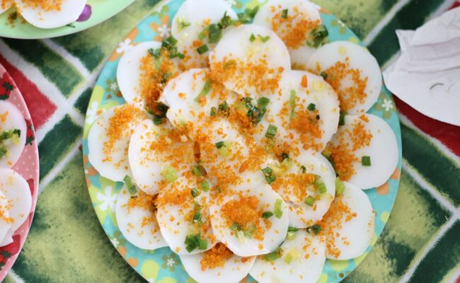
Địa chỉ:
- Quán Bánh Bèo Chén Bà Bé - Địa chỉ: 139 Trần Phú, phường 5, Vũng Tàu
- Quán Bánh Bèo Chén Đại Hùng - Địa chỉ: 12C Nguyễn Công Trứ, phường 1, Vũng Tàu
- Quán Bánh Bèo Chén Mười Hai - Địa chỉ: 12 Trần Hưng Đạo, phường 1, Vũng Tàu
- Quán Bánh Bèo Chén Xưa Và Nay - Địa chỉ: 46 Trần Phú, phường 5, Vũng Tàu